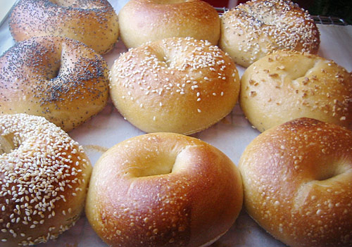

My Bagel Recipe

Classic, New York style bagels!
New York style bagels are the ideal bagel - what we all think of when we imagine the perfect bagel.
A golden outer crust, soft and chewy inner, and bursting with flavor, the New York bagel is something
that needs to be experience by everyone - ideally on many occasions!
This recipe will go over everything needed to produce amazing bagels the way they were intended to be enjoyed.
What You Will Need
- Bread Flour (minimum 12% protein content! This part is super important!)
- Dry Active Yeast
- Barley Malt Syrup
- Salt (basic table salt is fine!)
- Water (room temp or around 24° Celcius, but no hotter!)
- Large pot for boiling water
- Oven capable of up to 280° Celcius
- Food scale that can measure down to grams
Steps
- Measure ingredients. This is the most important part and can make or break your bagels. All ratios/percentages are based
off of the amount of flour used so this recipe can be easily scaled depending on the desired yield.
- 450g flour
- 3g dry active yeast (.66%)
- 18g barley malt syrup (4%)
- 9g salt (2%)
- 250g water (55% hydration)
- Combine yeast, sugar, and water and let sit for 5 minutes (do not mix yet!).
- In a large bowl, combine flour and salt.
- Once water mixture starts to bubble, whisk together until yeast and sugar are fully dissolved, then add it to the flour mixture.
- Using a spatula, mix flour and water together until it becomes a shaggy ball of dough.
- Continue to mix by hand until all ingredients are fully incorporated.
- Move dough to a clean, flat surface and knead by hand for about 10 minutes until ball of dough is smooth.
- Cover dough with bowl and let rest for 5 minutes
- After resting for 5 minutes, divide dough into equal portions (~120grams/each) and shape into bagels.
- Using this method takes some time to master, but yields the best results in the end!
- Place formed bagels on a parchment lined baking sheet and rest at room temperature for 30 minutes. This will be the first portion of "proofing"
the bagels, allowing the yeast to start developing.
- Place bagels into fridge for at least 12 hours, allowing them to "cold proof", which is a slowing of the fermentation process,
allowing the bagels to develop deeper, complex flavors.
- As the 12 hours are ending, ready a large pot of boiling water and preheat oven to 250° Celcius.
- Once pot is at a rolling boil, add bagels and boil for 30 seconds, flip and boil other side for 30 seconds.
- Remove bagels from pot and place on wire rack to go into the oven. If you would like to top the bagels with seasoning,
now would be the time to do so.
- Place bagels in the oven and bake at 250° Celcius for about 17-18 minutes, turning them over halfway, or until bagels forms a nice, brown crust.
- Once finished, remove from oven and allow to cool for about 5-10 minutes before enjoying!
Home